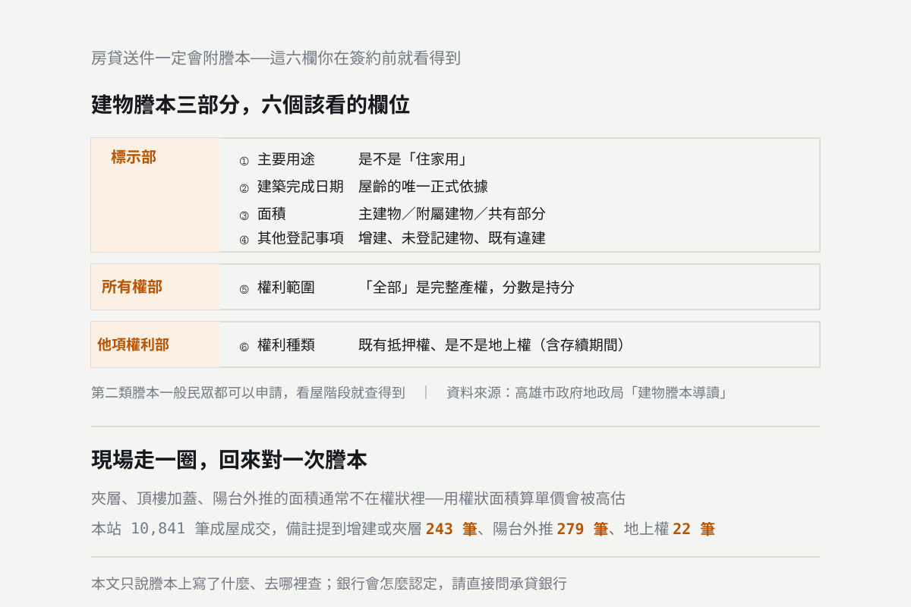

看屋時就該查的六件事，謄本上都寫著
房貸送件一定會附謄本，而謄本上的六個欄位，你在簽約之前就看得到。主要用途登記的是不是住家用、建築完成日期、權狀面積怎麼組成、其他登記事項有沒有註記、權利範圍是不是完整持分、土地的權利種類——這六項任何一項不對，後面的資金規劃就要重算。本文說明每一項在謄本的哪一部、怎麼查、查到什麼狀況要先問清楚。

統計基準：本文的謄本欄位與各部記載內容依高雄市政府地政局「建物謄本導讀」整理；袋地通行權依民法第 787 條第 1 項條文。查核日期 2026-10-14。文中的成交筆數取自本站收錄 255 個社區、成交日期 2020 年 1 月起、排除店面與預售的成屋成交 10,841 筆，統計基準日 2026-10-13。本文只說明謄本上記載的客觀事實與查核方式，不涉及個別金融機構的授信標準與核貸結果；貸款條件請直接向承貸銀行確認。
看屋的時候大家都在看格局、採光、裝潢。但真正會讓資金計畫翻盤的，常常是謄本上寫得清清楚楚、卻沒有人去看的那幾欄。
房貸送件一定會附謄本，所以這些資料遲早會被看到——差別只在於，你是在簽約前就知道，還是送件之後才知道。
先說本文的界線。以下只講謄本上記載了什麼、在哪一部、怎麼查、查到什麼狀況要先問清楚。銀行會怎麼認定、會貸幾成，本文不作任何推測——那要直接問承貸銀行，而且同樣條件在不同銀行的答案也不一樣。
先認識謄本的三個部分
| 部別 | 記載什麼 |
|---|---|
| 標示部 | 建物門牌、坐落地號、主要用途、主要建材、層數、層次、層次面積、總面積、建築完成日期、附屬建物用途、共有部分與權利範圍、其他登記事項 |
| 所有權部 | 所有權人、登記日期與原因、權利範圍（持分） |
| 他項權利部 | 抵押權、地上權等權利的設定內容：權利種類、權利人、擔保債權總金額、設定權利範圍、存續期間等 |
謄本分三類：第一類本人申請、第二類一般民眾都可以申請、第三類限利害關係人申請。看屋階段用第二類就查得到大部分資訊，地政事務所或線上都能申請。
一、主要用途登記的是不是「住家用」
在標示部。這一欄登記的是建物核准的用途，常見的有住家用、集合住宅、商業用、一般事務所、廠房。
實際住人、但主要用途不是住家用的物件是存在的，俗稱工業住宅、商辦住宅。格局與裝潢可能跟一般住宅沒兩樣，從現場看不出來——只有謄本看得出來。
查到不是住家用的話，要先問清楚三件事：這棟的使用分區與建物用途是什麼、同一棟其他住戶的貸款是怎麼辦的、以及未來要轉手時買方會遇到什麼。這些問題要問賣方、管委會與承貸銀行，不要自己假設。
二、建築完成日期
也在標示部，這是屋齡的唯一正式依據——不是廣告說的「屋齡約 15 年」，是謄本上的那個日期。
本站收錄的 253 個有完工年資料的社區，屋齡中位數是 20 年，9% 已經超過 30 年。屋齡會同時影響房屋本身的管線與結構狀況、未來的轉手難度，以及你能貸多少年——貸款年限直接決定月付金，用房貸試算工具把年限從 30 年改成 20 年，月付金的差距馬上看得到。
屋齡與成交單價的實際關係，高雄屋齡和房價差多少那篇用站上的成交資料算過。
三、權狀面積是怎麼組成的
標示部會分別記載層次面積、總面積，以及附屬建物的用途與面積、共有部分與權利範圍。「權狀 45 坪」是這幾塊加起來的結果，不是你實際能用的 45 坪。
- 01 主建物：室內實際的樓地板面積。
- 02 附屬建物：陽台、雨遮等，謄本會記載用途。要注意雨遮在不同年度的登記與計價規定不同。
- 03 共有部分：樓梯間、電梯、門廳、機電空間等，也就是公設。
本站成屋成交的坪數中位數是 45.9 坪，20 坪以下只占 2.9%、15 坪以下只占 1.2%——小坪數在高雄四大生活圈本來就是少數，可比的成交案例少，估價與轉手都比較沒有依據。公設比的實際分布見高雄公設比多少算合理。
四、其他登記事項有沒有註記
同樣在標示部，這一欄最容易被跳過，但它是謄本上少數會主動告訴你「這間房子有狀況」的地方。常見的註記包含增建、未登記建物、既有違建等。
更實際的做法：現場的面積和謄本對不對得起來。夾層、頂樓加蓋、陽台外推、後陽台外推這些，通常不會登記在面積裡，但你在現場看得到。看屋時多走一圈、回來對一次謄本，比任何技巧都有效。
這類狀況在實價登錄的備註欄也會露出來。本站 10,841 筆成屋成交中，備註提到增建、加建、違建或夾層的有 243 筆（2.2%）、陽台外推 279 筆（2.6%）。實價登錄的備註欄怎麼看那篇說明這些註記會怎麼影響你算出來的單價——外推與增建的面積不在權狀上，用權狀面積去除總價，單價會被高估。
五、權利範圍是不是完整的
在所有權部。權利範圍寫的是這位所有權人持有多少——「全部」是完整產權，分數（例如 1/2、1/3）就是持分。
持分物件的交易牽涉其他共有人的權利，土地法與民法對共有物的處分有相關規定，實務上也常伴隨使用範圍的爭議。看到持分登記，在出價之前就要把共有人結構、分管協議與現況使用問清楚。
六、土地的權利種類與既有的他項權利
他項權利部記載抵押權、地上權等權利的設定。兩件事要看：
- 01 既有的抵押權：賣方的房貸還沒清償的話，這裡會有設定紀錄。這在成交流程中會處理（用買方的價金清償、塗銷抵押權），但金額與清償安排要在簽約時談清楚，這也是履約保證存在的理由。
- 02 權利種類是不是「地上權」：地上權住宅的土地不屬於住戶，住戶取得的是有存續期間的地上權，謄本上會載明。本站的成交紀錄中有 22 筆備註提到地上權。這類產品的權利結構與一般所有權住宅本質不同，買之前要先把存續期間、地租與期滿的處理方式弄清楚。
另外一項：有沒有適宜的聯外道路
這一項謄本看不出來，要看地籍圖。土地如果與公路沒有適宜的聯絡，在法律上屬於袋地——民法第 787 條第 1 項規定：「土地因與公路無適宜之聯絡，致不能為通常使用時，除因土地所有人之任意行為所生者外，土地所有人得通行周圍地以至公路。」
也就是說，法律給了通行的權利，但那是要去主張的權利，不是現成的通路。透天、別墅或土地的交易要特別確認這一點；大樓社區通常有共同的出入口，比較少遇到。
看屋前後的查核順序
- 01 看屋前：先查實價登錄，看同社區近期成交與備註欄。免費，而且備註欄會提示增建、陽台外推、親友交易這些狀況。
- 02 看屋時：現場走一圈，記下疑似增建、外推、夾層的位置，回來和謄本的面積對照。
- 03 出價前：調第二類謄本，把上面六項逐一看過。
- 04 簽約前：有任何一項不單純，先問清楚再簽，不要簽了再處理。
- 05 送件前：把謄本與現況的差異主動跟承貸銀行說明，不要等對方發現。
查完產權，再回頭算錢。成數與年限會直接改變你要準備多少現金——買房要付哪些錢算過：1,500 萬、核貸八成，頭期款之外還要再準備約 41 萬；掉到七成，頭期款就多 150 萬。信用那一邊的規則見問很多家銀行會傷聯徵嗎，月付金與成數用房貸試算工具抓。
不確定謄本上那一行是什麼意思？把謄本或物件地址給我們，澄果團隊幫你看過一遍，有狀況的地方會直接說。 澄果團隊諮詢電話：07-9766977
資料查核日期：2026 年 10 月 14 日。謄本的分類、各部記載欄位與「主要用途」「建築完成日期」「面積」「其他登記事項」所在部別，依高雄市政府地政局「建物謄本導讀」；袋地通行權依民法第 787 條第 1 項條文。成交筆數與坪數、屋齡統計取自本站收錄 255 個社區、2020 年 1 月起、排除店面與預售的成屋成交 10,841 筆，屋齡統計以 253 個有完工年資料的社區計算。本文只說明謄本記載的客觀事實與查核方式，不涉及個別金融機構的授信標準與核貸結果；實際成數、年限與利率請以承貸銀行核定為準，產權與法律問題請洽地政士或律師。